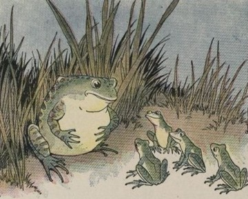

La Grenouille qui se veut faire aussi grosse que le Bœuf
הַצְּפַרְדֵּעַ וְהַשּׁוֹר
Une grenouille vit un bœuf
Qui lui sembla de belle taille.
Elle, qui n’était pas grosse en tout comme un œuf,
Envieuse, s’étend, et s’enfle, et se travaille
Pour égaler l’animal en grosseur ;
Disant : Regardez bien, ma sœur ;
Est-ce assez ? dites-moi ; n’y suis-je point encore ? —
Nenni. — M’y voici donc ? — Point du tout. — M’y voilà ? —
Vous n’en approchez point. La chétive pécore
S’enfla si bien qu’elle creva.
Le monde est plein de gens qui ne sont pas plus sages :
Tout bourgeois veut bâtir comme les grands seigneurs,
Tout petit prince a des ambassadeurs,
Tout marquis veut avoir des pages.